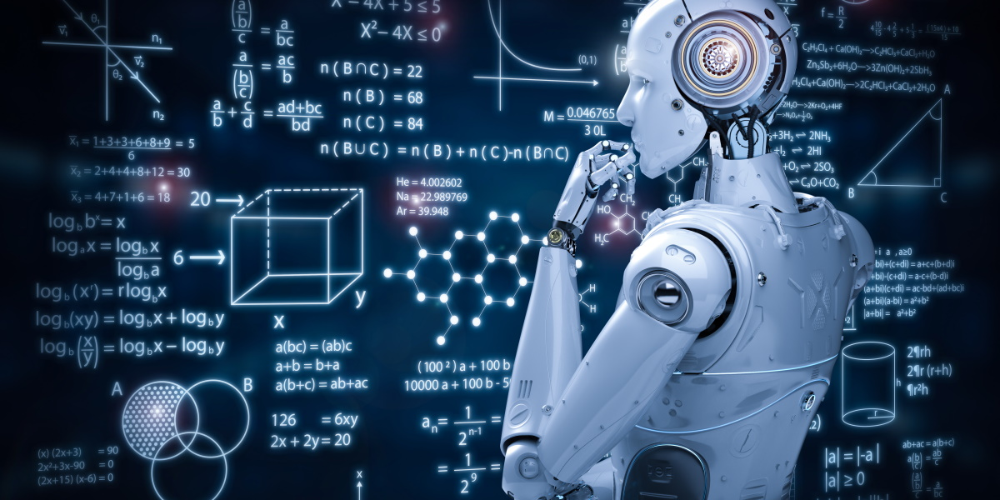
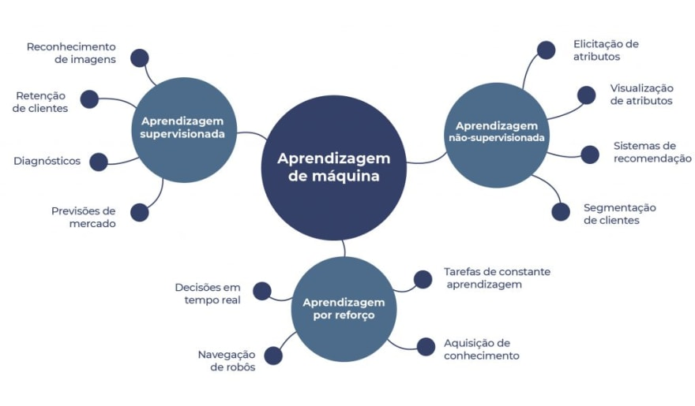
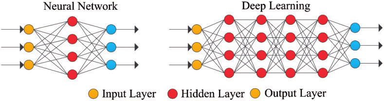
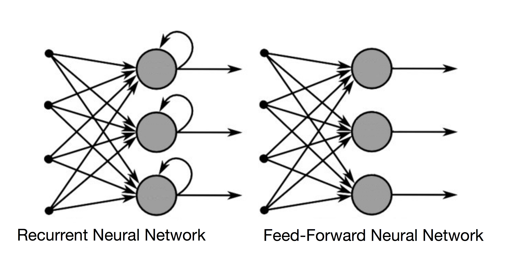

IA e Seus Conceitos
O que significa inteligência artificial?
A inteligência artificial é um ramo da ciência da computação que se concentra no desenvolvimento de máquinas que podem
realizar tarefas que normalmente requerem inteligência humana. Gerando ao decorer dos anos diferentes abordagens de como
ensinar as IAs a pensar como os seres humanos.

IA Simbólica:
A IA simbólica , muitas vezes conhecida como IA Classic ou "GOFAI" (Good Old Fashioned AI), foi o modelo mais popular da
década de 1950 até a década de 1990. Esta abordagem baseia-se no processamento simbólico de informações por meio de regras
e inferências lógicas, funcionando através de um sistema de regras.
Machine learning:
ML é um ramo da inteligência artificial baseado na noção de que as máquinas podem aprender com os dados, compreender padrões e
tomar decisões com o mínimo de intervenção humana. A maneira como uma máquina clássica aprende a se tornar mais precisa em suas
previsões é frequentemente usada para classificar o processo de aprendizagem. Logo abaixo podemos observar os 4 tipos principais
de aprendizado do ML:

Tipos de aprendizado:

- 1º Aprendizagem supervisionada: utiliza valores previamente coletados para analisar variáveis e determinar resultados de saída relevantes.
- 2º Aprendizagem não supervisionada: busca padrões em dados não rotulados sem uma resposta correta definida.
- 3º Aprendizagem semissupervisionada combina ambos os tipos de dados e é usada em várias metodologias, incluindo classificação e regressão.
- 4º Aprendizagem por reforço envolve um modelo de comportamento de aprendizado baseado em tentativa e
erro, sem dados de amostra, semelhante ao processo de uma criança aprendendo a andar.
Deep learning:
O deep learning é uma das abordagens do machine learning, que envolve por exemplo o reconhecimento de imagem, reconhecimento de voz e geração
precisa de previsões, usando redes neurais artificiais que simulam um raciocínio do cérebro humano. :

Funcionamento do Deep Learning:

Os algoritmos do deep learning se aplicam a redes neuronais artificiais estruturadas na forma de camadas: input layer, hidden layer e output layer.
Os dados entram pela primeira camada, onde há vários neurônios artificiais que se ativam ou não dependendo dos dados. Nas camadas intermediárias
é onde processa-se os dados afim de chegar em um resultado , finalmente a camada de saída emite-se a resposta.
Rede Neural:
Uma rede neural é uma estrutura simples que conecta neurônios organizados, combinando operações unitárias para problemas complexos. Dentro do Deep
Learning utiliza-se três modelos principais de organização de redes neurais.

Principais Modelos:

- 1º Rede Neural Artificial (RNA) é uma coleção de múltiplos perceptrons ou neurônios em cada camada, conhecida como feed-forward neural. É uma
das variações mais diretas das redes neurais, transmitindo informações em uma direção específica.
- 2º Redes Neurais Convolucionais (CNN) são amplamente utilizadas, baseadas em uma variedade de perceptrons multicâmeras e mapas complicados
complexos.
- 3º Redes Neurais Recorrentes (RNN) são mais complexas, aprendendo a prever o resultado de uma camada, com cada nó atuando como uma célula de memória.
Deep Learning e os Carros Autonomos:
Carros autônomos equipados com câmeras, radares, sensores LiDAR, GPS e lasers de detecção a laser usam inteligência artificial para identificar objetos, analisar seu
movimento e determinar sua posição. O aprendizado profundo ajuda o carro a visualizar o mundo real e a reconhecer obstáculos antes de tomar decisões. Porém, o custo
de produção é alto para entusiastas interessados em conhecer esete mundo. Visando contornar este problema o Donkey Car foi desenvolvido para contornar isto.

Donkey Car:

Donkey Car é um projeto de código aberto que visa criar carros autônomos em escala reduzida e com baixo custo para aprendizado e desenvolvimento. Esses carros, normalmente
modelos pequenos ou escalonados, que podem ser equipados com sensores para capturar dados ambientais por exemplo. Entusiastas e desenvolvedores usam o Donkey Car como
plataforma para aprender sobre tecnologia de veículos autônomos, programação e treinamento de modelos de aprendizado de máquina.